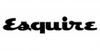
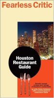

Press
100 Restaurants America Can't Afford to Lose

Houston Chronicle Top 100 Houston Restaurants - 2012, 2013, 2014, 2015, 2016, 2017, 2018 & 2019
ThrillList, 21 Best Vietnamese Restaurants in Houston, January 2020
CultureMap's Top 100 - The very best restaurants in Houston, 2019
The 21 Best Restaurants in Houston, Time Out, Houston, The Eat List, 2018
Best Vietnamese Restaurant - "Huynh is an easy spot to love", Houston Press, 2010 & 2016
"the food here is made with much more care and talent than we've seen at other Vietnamese restaurants in town...Huynh's modern décor and its superb and sometimes creative take on standard Vietnamese dishes, the prices are completely in line with those of its inferiors." - Fearless Critic, 2010 Houston Restaurant Guide
